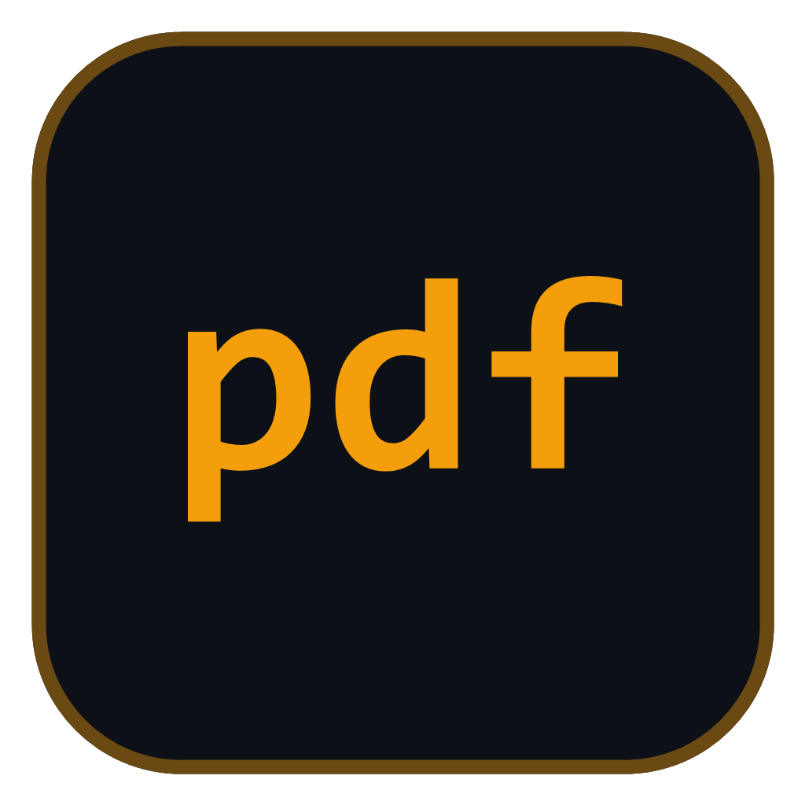
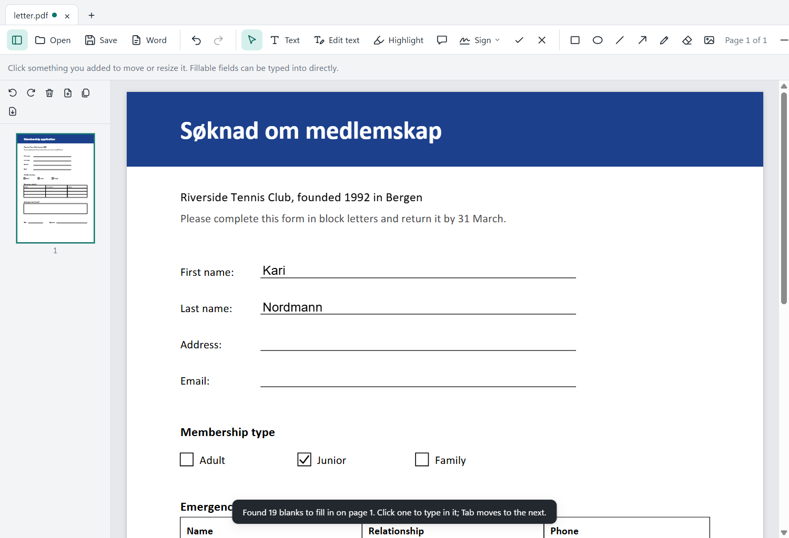

Duckument
A small PDF app for the everyday jobs: signing a document, filling in a form, adding text and marking things up. Everything happens on your own computer; no account, no uploads.
Windows may say Windows protected your PC
, because the installers aren't code-signed (that costs money every year). Click More info, then Run anyway. After that the apps keep themselves up to date.

// what it does
Sign
Draw your signature, type it, or use a photo of it. It's remembered, so the next document takes two clicks.
Fill in forms
Fillable fields are found by themselves: click and type, Tab to the next.
Forms that aren't fillable
Press T and the empty lines, boxes and tick boxes light up. Click one and type, sized to fit.
Edit text
Press E and click any text to change it, in the same size and colour.
Shapes and pictures
Rectangles, arrows, freehand, white-out, check marks, and pasted pictures.
Save as Word
Turn a PDF into a Word document to edit it properly.
Redact
Press B and draw over what must go. On saving, the text underneath is really removed from the file, not just covered.
Page numbers, headers and watermarks
Page 1 of 9, your own header or footer text, or DRAFT across every page; each can still be moved, and Undo takes them all off.
Stamps
APPROVED, RECEIVED, CONFIDENTIAL or your own words, framed and dated, in the corner of the page.
The signature is a picture of your signature placed on the page, not a certificate-based digital signature.
// keys
| V T E S | Select, Text, Edit text, Sign |
| C X | Check mark, cross |
| R O L A P W B | Rectangle, ellipse, line, arrow, draw, white-out, redact |
| Tab / Shift+Tab | Next / previous blank |
| Ctrl+Z / Ctrl+Y | Undo / redo |
| Ctrl+scroll wheel | Zoom |
// help
Something not working, or missing? Tell us on GitHub. Duckument is free and open source: see the code.